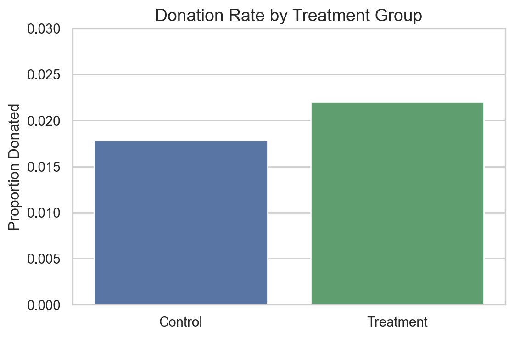
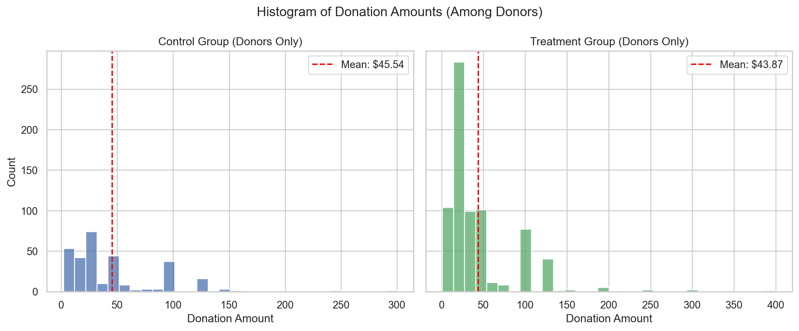
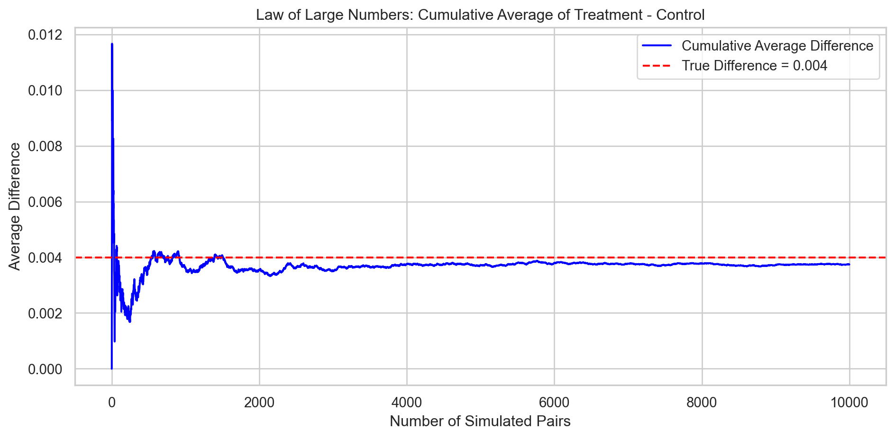

Dean Karlan at Yale and John List at the University of Chicago conducted a field experiment to test the effectiveness of different fundraising letters. They sent out 50,000 fundraising letters to potential donors, randomly assigning each letter to one of three treatments: a standard letter, a matching grant letter, or a challenge grant letter. They published the results of this experiment in the American Economic Review in 2007. The article and supporting data are available from the AEA website and from Innovations for Poverty Action as part of Harvard’s Dataverse.
In the experiment, more than 50,000 previous donors were randomly assigned to receive one of several direct-mail solicitations. These solicitations varied in three main dimensions: - Whether a matching grant was offered, and at what ratio ($1:$1, $2:$1, or $3:$1), - The maximum threshold for matching (e.g., $25,000, $50,000, or $100,000), - The suggested donation amount on the reply card, based on prior giving history.
The central hypothesis was that offering a matching grant would increase both the likelihood of giving and the total donation amount. The authors also explored whether larger match ratios (e.g., $3:$1) would be more effective than smaller ones.
Importantly, because of the randomized assignment of treatments, the experiment allows for clean causal inference on the effect of each fundraising strategy.
One notable finding from their analysis was that offering any match significantly increased donations, but increasing the match ratio beyond $1:$1 had no additional benefit. Moreover, they found that responses varied by political context—the treatment effects were stronger in U.S. states that voted for George W. Bush in the 2004 presidential election.
This project seeks to replicate and visualize these key findings using the original dataset and modern statistical tools.
Data
Description
import pandas as pddf = pd.read_stata("karlan_list_2007.dta")df.head()
The dataset contains 50,083 observations and 51 variables. Each row represents a unique individual who received one of the fundraising letters in the Karlan and List (2007) field experiment.
The variables include: - Treatment indicators (treatment, control, ratio, size, etc.) describing the type and details of the fundraising letter received. - Suggested donation values and historical giving behavior (ask, ask1, hpa, etc.). - Outcome variables, such as whether a donation was made (gave) and the amount given (amount). - Demographic and geographic variables, such as gender (female), income (median_hhincome), and urbanization (pop_propurban).
Most variables are either integer-coded dummy variables or numeric, with some categorical fields (e.g., ratio, size, ask).
The dataset is overall very clean: - The vast majority of columns have no missing values. - A few variables, primarily those related to demographics (e.g., female, couple, pwhite, median_hhincome), contain some missing values—up to around 3.7% missing in the worst case (1,874 out of 50,083). - These missing values are mostly concentrated in the geographic/demographic features and do not affect the treatment or outcome variables.
Variable Definitions
Variable
Description
treatment
Treatment
control
Control
ratio
Match ratio
ratio2
2:1 match ratio
ratio3
3:1 match ratio
size
Match threshold
size25
$25,000 match threshold
size50
$50,000 match threshold
size100
$100,000 match threshold
sizeno
Unstated match threshold
ask
Suggested donation amount
askd1
Suggested donation was highest previous contribution
askd2
Suggested donation was 1.25 x highest previous contribution
askd3
Suggested donation was 1.50 x highest previous contribution
ask1
Highest previous contribution (for suggestion)
ask2
1.25 x highest previous contribution (for suggestion)
ask3
1.50 x highest previous contribution (for suggestion)
amount
Dollars given
gave
Gave anything
amountchange
Change in amount given
hpa
Highest previous contribution
ltmedmra
Small prior donor: last gift was less than median $35
freq
Number of prior donations
years
Number of years since initial donation
year5
At least 5 years since initial donation
mrm2
Number of months since last donation
dormant
Already donated in 2005
female
Female
couple
Couple
state50one
State tag: 1 for one observation of each of 50 states; 0 otherwise
nonlit
Nonlitigation
cases
Court cases from state in 2004-5 in which organization was involved
statecnt
Percent of sample from state
stateresponse
Proportion of sample from the state who gave
stateresponset
Proportion of treated sample from the state who gave
stateresponsec
Proportion of control sample from the state who gave
stateresponsetminc
stateresponset - stateresponsec
perbush
State vote share for Bush
close25
State vote share for Bush between 47.5% and 52.5%
red0
Red state
blue0
Blue state
redcty
Red county
bluecty
Blue county
pwhite
Proportion white within zip code
pblack
Proportion black within zip code
page18_39
Proportion age 18-39 within zip code
ave_hh_sz
Average household size within zip code
median_hhincome
Median household income within zip code
powner
Proportion house owner within zip code
psch_atlstba
Proportion who finished college within zip code
pop_propurban
Proportion of population urban within zip code
Balance Test
As an ad hoc test of the randomization mechanism, I provide a series of tests that compare aspects of the treatment and control groups to assess whether they are statistically significantly different from one another.
As a robustness check on the validity of the randomization procedure, I performed balance tests comparing the treatment and control groups across three pre-treatment variables that are not outcome variables:
mrm2 (months since last donation),
freq (number of prior donations),
female (gender indicator).
For each variable, I performed both a manual t-test and a simple linear regression with the variable as the outcome and treatment as the predictor.
We can see that none of the variables exhibit statistically significant differences between the treatment and control groups at the 95% confidence level. All t-statistics are small in absolute value and p-values are above 0.05. The manual t-tests and regression results match perfectly, as expected
Interpretation & Comparison with Table 1 in the Paper
These findings replicate what is shown in Table 1 of Karlan and List (2007), which also shows minimal differences between treatment and control groups across various pre-treatment characteristics. Table 1 is included in the original paper as a demonstration of successful randomization. If randomization is properly implemented, the only expected differences between groups should be due to chance — not systematic differences in characteristics.
Our results confirm this. Variables such as months since last donation, number of prior donations, and gender are all statistically balanced across groups. This supports the internal validity of the experiment and allows us to interpret any differences in donation outcomes as causal effects of the treatment rather than artifacts of initial imbalance.
Experimental Results
Charitable Contribution Made
First, I analyze whether matched donations lead to an increased response rate of making a donation.
import pandas as pdimport matplotlib.pyplot as pltimport seaborn as snsdf = pd.read_stata("karlan_list_2007.dta")donation_rate = df.groupby("treatment")["gave"].mean().reset_index()donation_rate["Group"] = donation_rate["treatment"].map({0: "Control", 1: "Treatment"})sns.set(style="whitegrid")plt.figure(figsize=(6, 4))colors = ["#4C72B0", "#55A868"] sns.barplot(x="Group", y="gave", data=donation_rate, palette=colors)plt.ylim(0, 0.03)plt.ylabel("Proportion Donated", fontsize=12)plt.title("Donation Rate by Treatment Group", fontsize=14)plt.xlabel("")plt.xticks(fontsize=11)plt.yticks(fontsize=11)plt.tight_layout()plt.show()
C:\Users\25645\AppData\Local\Temp\ipykernel_28864\3870666356.py:13: FutureWarning:
Passing `palette` without assigning `hue` is deprecated and will be removed in v0.14.0. Assign the `x` variable to `hue` and set `legend=False` for the same effect.

The bar plot above illustrates the proportion of individuals who donated in each group. The treatment group, who received a matching offer, shows a slightly higher donation rate than the control group.
Manual t-test: t = 3.209, p = 0.0013
Regression: Coef = 0.0042, Std Err = 0.0013, t = 3.101, p = 0.0019
The t-test and regression results show that the treatment group had a donation rate approximately 0.42 percentage points higher than the control group, which aligns closely with the difference reported in Table 2A Panel A of the original study (2.2% vs. 1.8%).
Our t-statistic (~3.2) and p-value (0.0013) indicate that this difference is statistically significant at well below the 1% level. The regression confirms this with a nearly identical coefficient and standard error.
Interpretation
Even though the difference in donation rates might seem small numerically, it is statistically meaningful and practically important in the context of large-scale fundraising. The key insight is that human generosity is not fixed — it can be influenced by how giving opportunities are presented.
The presence of a matching grant doesn’t just increase the value of each donation; it also creates a psychological incentive. People may feel that their impact is greater when a match is involved, or that someone else is “joining them” in the cause. This social framing makes them more likely to act. This finding has broad implications for nonprofit fundraising and behavioral economics more generally: well-designed, low-cost incentives can powerfully nudge human behavior.
This result confirms the finding in Table 3, Column 1 of Karlan and List (2007): assignment to the treatment group (i.e., receiving a matching donation offer) increases the probability of donating by approximately 0.4 percentage points, and the effect is statistically significant at the 1% level.
Differences between Match Rates
Next, I assess the effectiveness of different sizes of matched donations on the response rate.
import pandas as pdimport scipy.stats as statsdf = pd.read_stata("karlan_list_2007.dta")df_match = df[df['treatment'] ==1]gave_1to1 = df_match[(df_match['ratio2'] ==0) & (df_match['ratio3'] ==0)]['gave'].dropna()gave_2to1 = df_match[df_match['ratio2'] ==1]['gave'].dropna()gave_3to1 = df_match[df_match['ratio3'] ==1]['gave'].dropna()tstat_12, pval_12 = stats.ttest_ind(gave_1to1, gave_2to1)tstat_13, pval_13 = stats.ttest_ind(gave_1to1, gave_3to1)tstat_23, pval_23 = stats.ttest_ind(gave_2to1, gave_3to1)print("1:1 vs 2:1 (within treatment) --> t = {:.3f}, p = {:.4f}".format(tstat_12, pval_12))print("1:1 vs 3:1 (within treatment) --> t = {:.3f}, p = {:.4f}".format(tstat_13, pval_13))print("2:1 vs 3:1 (within treatment) --> t = {:.3f}, p = {:.4f}".format(tstat_23, pval_23))
1:1 vs 2:1 (within treatment) --> t = -0.965, p = 0.3345
1:1 vs 3:1 (within treatment) --> t = -1.015, p = 0.3101
2:1 vs 3:1 (within treatment) --> t = -0.050, p = 0.9600
To test the claim made by the authors that “larger match ratios… have no additional impact” (page 8), I conducted a series of t-tests comparing donation rates between different match ratios. The output from the code support the authors’ observation that although donation rates vary slightly across match ratios, these differences are not statistically meaningful. The numbers alone may “suggest” a higher rate under 2:1 matches, but our analysis shows that this is likely due to random variation rather than a true treatment effect.
import pandas as pdimport scipy.stats as statsimport statsmodels.formula.api as smfdf = pd.read_stata("karlan_list_2007.dta")df_match = df[df['treatment'] ==1]df_ratio1 = df_match[(df_match['ratio2'] ==0) & (df_match['ratio3'] ==0)]df_ratio2 = df_match[df_match['ratio2'] ==1]df_ratio3 = df_match[df_match['ratio3'] ==1]model1 = smf.ols('gave ~ 1', data=df_ratio1).fit()model2 = smf.ols('gave ~ 1', data=df_ratio2).fit()model3 = smf.ols('gave ~ 1', data=df_ratio3).fit()print("Ratio 1:1 mean gave =", model1.params.iloc[0])print("Ratio 2:1 mean gave =", model2.params.iloc[0])print("Ratio 3:1 mean gave =", model3.params.iloc[0])
Ratio 1:1 mean gave = 0.0207491242252762
Ratio 2:1 mean gave = 0.022633375246991206
Ratio 3:1 mean gave = 0.02273339922724415
I estimated three separate regressions, each restricted to a different match ratio group within the treatment population. Each model estimates the average probability of donating (gave) under the respective match ratio.
Under a 1:1 match, the donation rate was approximately 2.07%
Under a 2:1 match, the rate was 2.26%
Under a 3:1 match, the rate was 2.27%
Although there are small numerical differences, they are not statistically significant, as confirmed by the earlier t-tests. These findings support the authors’ conclusion that increasing the match ratio beyond 1:1 does not meaningfully increase the likelihood of giving.
Differences from regression-based fitted coefficients:
Difference (2:1 - 1:1) = 0.0018842510217150048
Difference (3:1 - 2:1) = 0.00010002398025294248
Directly calculated group means:
Directly calculated mean (1:1) = 0.020749124225276205
Directly calculated mean (2:1) = 0.0226333752469912
Directly calculated mean (3:1) = 0.022733399227244138
Differences computed directly from the data:
Difference (2:1 - 1:1) = 0.0018842510217149944
Difference (3:1 - 2:1) = 0.00010002398025293902
Effectiveness of Different Match Ratios
To assess whether the size of the matched donation affects response rates, I calculated the donation rate differences between the three match ratios using two approaches: (1) fitted values from separate regressions, and (2) direct group means from the data.
The response rate difference between 2:1 and 1:1 was 0.00188 (about 0.19 percentage points).
The response rate difference between 3:1 and 2:1 was only 0.00010 (about 0.01 percentage points).
These values are nearly identical between the regression-based and data-based methods, confirming the robustness of the findings.
Conclusion:
While the 2:1 match ratio shows a slightly higher response rate than 1:1, the difference is very small, and the additional increase from 2:1 to 3:1 is almost negligible. These findings support the conclusion from the original paper that increasing the match ratio beyond 1:1 does not meaningfully enhance the likelihood of donation.
The implication is that once the psychological effect of a matching grant is introduced, making the match more generous (e.g., 2:1 or 3:1) offers little additional motivational benefit. The presence of a match itself is impactful — but its size does not substantially change behavior.
Size of Charitable Contribution
In this subsection, I analyze the effect of the size of matched donation on the size of the charitable contribution.
import pandas as pdimport statsmodels.formula.api as smffrom scipy import statsdf = pd.read_stata("karlan_list_2007.dta")df_amt = df[['amount', 'treatment']].dropna()treat_amt = df_amt[df_amt['treatment'] ==1]['amount']ctrl_amt = df_amt[df_amt['treatment'] ==0]['amount']t_stat, p_val = stats.ttest_ind(treat_amt, ctrl_amt)print("T-test: t = {:.3f}, p = {:.4f}".format(t_stat, p_val))
T-test: t = 1.861, p = 0.0628
To evaluate whether offering a matching donation affects the size of contributions (i.e., the donation amount), I conducted a t-test comparing the average donation between the treatment and control groups.
The t-test yielded: - t = 1.861 - p = 0.0628
Interpretation
The result suggests that individuals in the treatment group — those who were offered a matching donation — gave more on average than those in the control group. However, this difference is not statistically significant at the conventional 5% level, though it is marginally significant at the 10% level.
It appears that the presence of a match may increase donation amounts, but the effect is not strong enough to be conclusive using this method alone. The modest significance may reflect the fact that most of the increase in total fundraising comes from a higher likelihood of giving, not necessarily from larger gifts among those who give.
import pandas as pdimport statsmodels.formula.api as smfdf = pd.read_stata("karlan_list_2007.dta")df_positive = df[df['amount'] >0][['amount', 'treatment']].dropna()model = smf.ols("amount ~ treatment", data=df_positive).fit()model.summary2().tables[1]
Coef.
Std.Err.
t
P>|t|
[0.025
0.975]
Intercept
45.540268
2.423378
18.792063
5.473578e-68
40.784958
50.295579
treatment
-1.668393
2.872384
-0.580839
5.614756e-01
-7.304773
3.967986
Interpretation of Regression Coefficients
This regression analyzes how much people donate, conditional on having donated at all (amount > 0). The outcome variable is the donation amount, and the independent variable is treatment (whether the donor received a matching donation offer).
The intercept (45.54) represents the average donation amount among control group donors (i.e., those who did not receive a matching offer).
The treatment coefficient (−1.67) tells us that, conditional on giving, donors in the treatment group gave $1.67 less on average than those in the control group.
However, this difference is not statistically significant (p = 0.561), and the 95% confidence interval includes zero (from about −7.30 to +3.96). ### Does the Coefficient Have a Causal Interpretation? No, the treatment coefficient in this regression does not have a clean causal interpretation, because the sample is conditioned on the outcome (i.e., we only include people who gave). Since treatment status affects who chooses to give, the two groups may no longer be comparable. This introduces selection bias.
import pandas as pdimport matplotlib.pyplot as pltimport seaborn as snsdf = pd.read_stata("karlan_list_2007.dta")df_positive = df[df['amount'] >0]control_donors = df_positive[df_positive['treatment'] ==0]treat_donors = df_positive[df_positive['treatment'] ==1]mean_ctrl = control_donors['amount'].mean()mean_treat = treat_donors['amount'].mean()sns.set(style="whitegrid")fig, axs = plt.subplots(1, 2, figsize=(12, 5), sharey=True)sns.histplot(control_donors['amount'], bins=30, ax=axs[0], color="#4C72B0")axs[0].axvline(mean_ctrl, color='red', linestyle='--', label=f'Mean: ${mean_ctrl:.2f}')axs[0].set_title("Control Group (Donors Only)")axs[0].set_xlabel("Donation Amount")axs[0].legend()sns.histplot(treat_donors['amount'], bins=30, ax=axs[1], color="#55A868")axs[1].axvline(mean_treat, color='red', linestyle='--', label=f'Mean: ${mean_treat:.2f}')axs[1].set_title("Treatment Group (Donors Only)")axs[1].set_xlabel("Donation Amount")axs[1].legend()plt.suptitle("Histogram of Donation Amounts (Among Donors)", fontsize=14)plt.tight_layout()plt.show()

Simulation Experiment
As a reminder of how the t-statistic “works,” in this section I use simulation to demonstrate the Law of Large Numbers and the Central Limit Theorem.
Suppose the true distribution of respondents who do not get a charitable donation match is Bernoulli with probability p=0.018 that a donation is made.
Further suppose that the true distribution of respondents who do get a charitable donation match of any size is Bernoulli with probability p=0.022 that a donation is made.
Law of Large Numbers
import numpy as npimport matplotlib.pyplot as pltnp.random.seed(42)n_simulations =10000n_per_group =100diffs = []for _ inrange(n_simulations): treat_group = np.random.binomial(1, 0.022, size=n_per_group) control_group = np.random.binomial(1, 0.018, size=n_per_group) treat_avg = np.mean(treat_group) control_avg = np.mean(control_group) diffs.append(treat_avg - control_avg)diffs = np.array(diffs)cumulative_avg = np.cumsum(diffs) / np.arange(1, n_simulations +1)plt.figure(figsize=(10, 5))plt.plot(cumulative_avg, label='Cumulative Average Difference', color='blue')plt.axhline(0.004, color='red', linestyle='--', label='True Difference = 0.004')plt.title("Law of Large Numbers: Cumulative Average of Treatment - Control")plt.xlabel("Number of Simulated Pairs")plt.ylabel("Average Difference")plt.legend()plt.tight_layout()plt.show()

This simulation follows the logic of the Law of Large Numbers (LLN) by repeatedly simulating experiments with independent treatment and control groups. For each of 10,000 simulated experiments, we draw 100 observations from a control distribution (p = 0.018) and 100 from a treatment distribution (p = 0.022), calculate the difference in means, and plot the cumulative average of those differences.
As the number of experiments increases, the cumulative average stabilizes around the true population difference of 0.004, demonstrating that the average of estimates converges to the true value with enough data — exactly as predicted by the LLN.
These four histograms show the distribution of the average donation rate differences between treatment and control groups over 1,000 simulated experiments at sample sizes of 50, 200, 500, and 1000. In each experiment, we randomly drew observations from two Bernoulli distributions (p=0.022 for treatment and p=0.018 for control) and computed the average difference.
Sample Size = 50:
The distribution is very wide and highly variable. Zero lies well within the bulk of the distribution, meaning it’s not uncommon to observe sample differences near or even below zero due to noise. This reflects high sampling variability with small samples.
Sample Size = 200:
The distribution tightens and begins to center more clearly around the true difference of 0.004. Zero is still relatively close to the middle, but it’s less dominant compared to sample size 50.
Sample Size = 500:
The distribution is visibly more concentrated. The peak of the histogram is now clearly to the right of zero, closer to 0.004. Zero is moving toward the tail, indicating increasing power to detect the true effect.
Sample Size = 1000:
At this sample size, the distribution becomes even more narrow and sharply peaked around the true mean difference. Zero now lies clearly in the tail of the distribution. This means that if the true difference is 0.004, it is increasingly unlikely (with larger samples) to observe a result as small as zero just by chance.